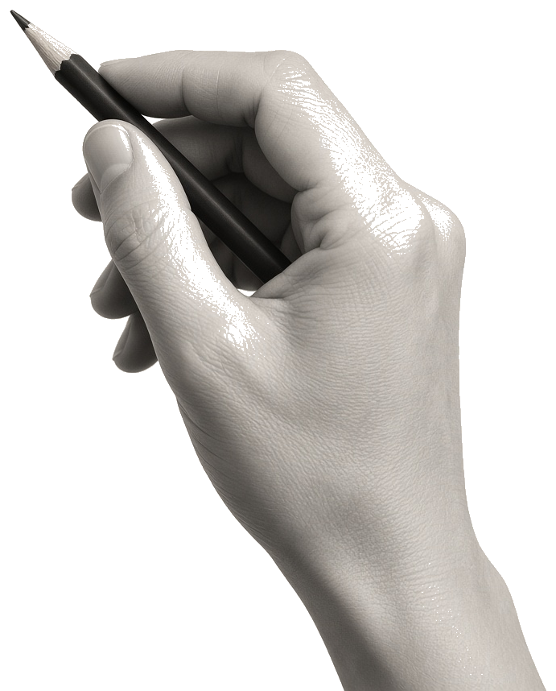

Multimedia journalist

My name’s Scarlet. I’m a freelance multimedia journalist working to bring light to underrepresented parts of the world. I currently specialise in hard and soft news, alongside long-form writing, features, and women’s extreme sports. I have bylines with The Northern Quota and The Scarab Trust, and briefly printed articles in the Camden New Journal.